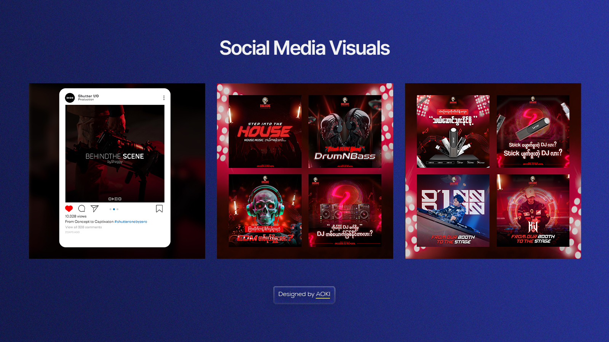
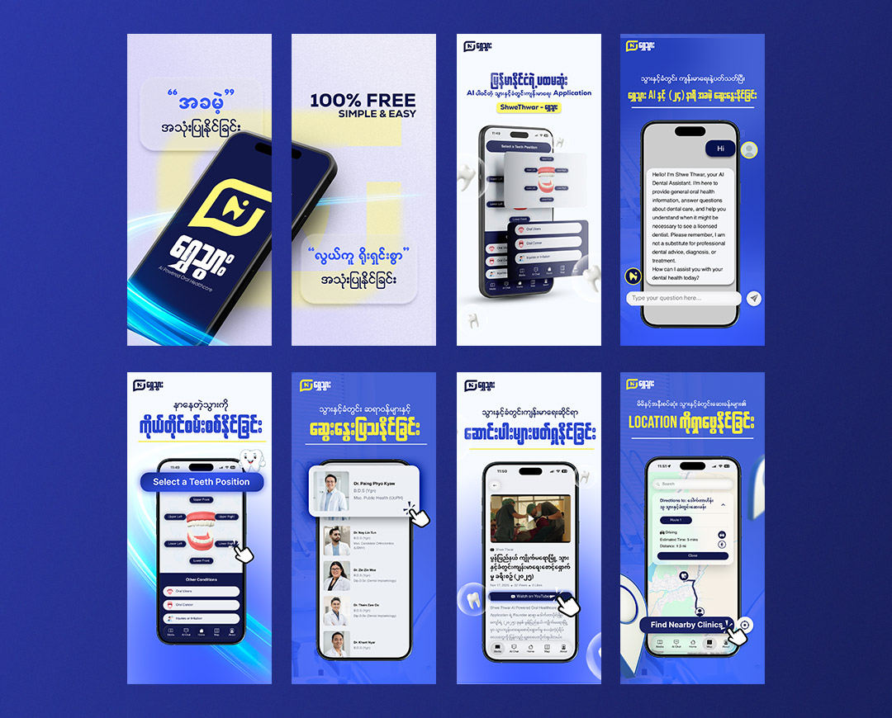
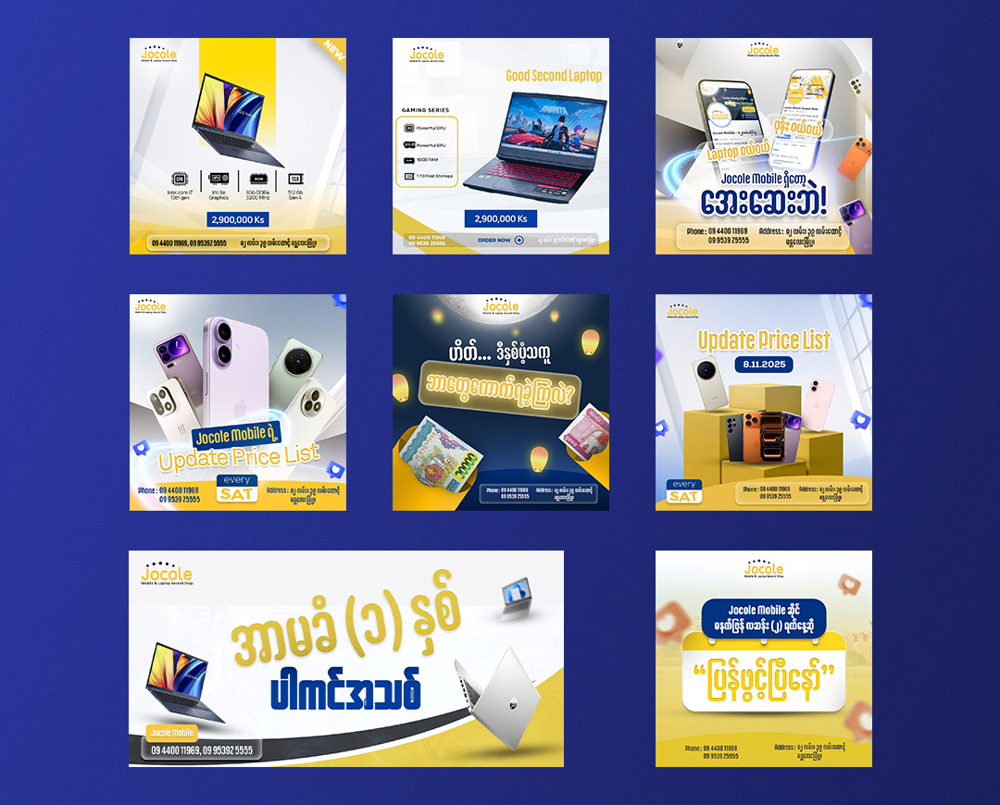
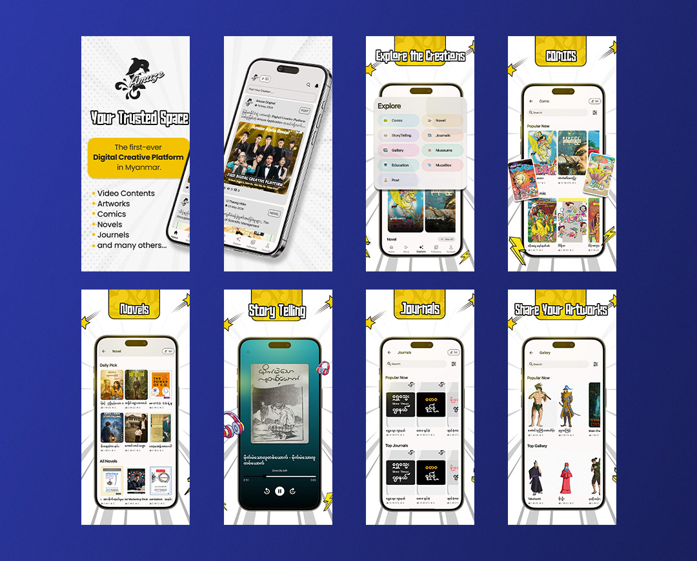
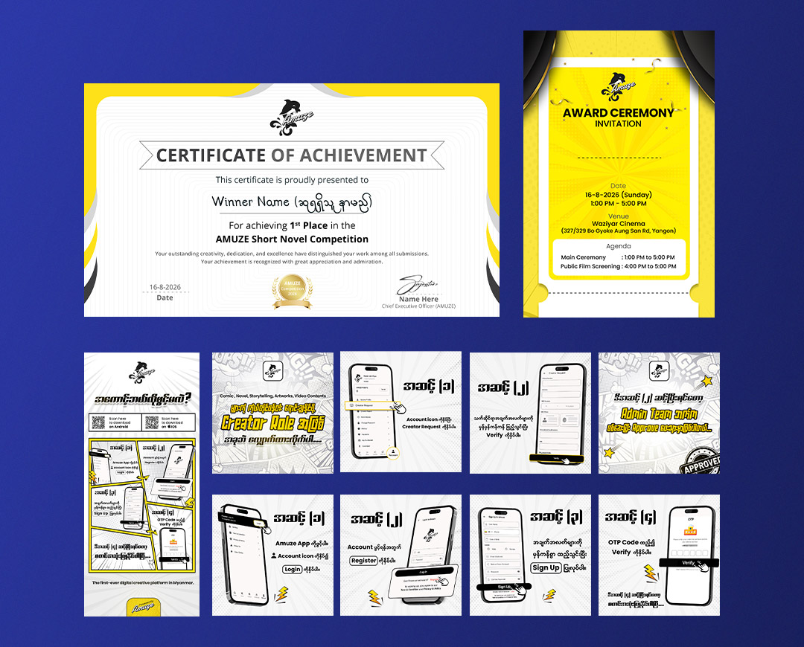

Creative Visuals
Creative Concept နဲ့ Visual Storytelling ကို အခြေခံပြီး Social Media၊ Marketing နဲ့ Promotional Content တွေအတွက် ဖန်တီးထားတဲ့ Graphic Design Projects တွေထဲက Selected Works အချို့ကို ဒီနေရာမှာ ဖော်ပြထားပါတယ်။
Focus
Creative Visuals
Role
Graphic Designer
Services
Visual Design
Tools
Photoshop · Illustrator

Creative Visuals အကြောင်း
Creative Visual Design တွေမှာ Concept၊ Composition၊ Typography နဲ့ Colour တွေကို ပေါင်းစပ်ပြီး ကြည့်ရှုသူရဲ့ Attention ရရှိစေမယ့် Visual တစ်ခု ဖန်တီးဖို့ အဓိကထားပါတယ်။
Project တစ်ခုချင်းစီရဲ့ ရည်ရွယ်ချက်နဲ့ Platform အပေါ်မူတည်ပြီး သင့်တော်တဲ့ Visual Style ကို ရွေးချယ်ကာ Brand Message ကို ရှင်းလင်းစွာ ဖော်ပြနိုင်အောင် Design လုပ်ထားပါတယ်။
Selected Work
Creative Projects




Design Approach
Creating Visual Impact
Concept
Project ရဲ့ Goal နဲ့ Message ကို နားလည်ပြီး သင့်တော်တဲ့ Creative Concept ကို စဉ်းစားပါတယ်။
Visual Design
Typography၊ Colour၊ Image နဲ့ Graphic Elements တွေကို ပေါင်းစပ်ပြီး Visual Direction ဖန်တီးပါတယ်။
Final Design
Platform နဲ့ အသုံးပြုမယ့် Format အလိုက် Final Design ကို သေချာပြင်ဆင်ပေးပါတယ်။
Final Outcome
Creative Visual Projects တွေမှာ Design တစ်ခုချင်းစီရဲ့ Concept နဲ့ Visual Quality ကို ထိန်းသိမ်းထားရင်း ကြည့်ရှုသူအတွက် စိတ်ဝင်စားဖွယ်ကောင်းတဲ့ Visual Experience တစ်ခု ဖန်တီးဖို့ အာရုံစိုက်ထားပါတယ်။
Social Media၊ Marketing နဲ့ Promotional Content တွေမှာ အသုံးပြုနိုင်အောင် Clear၊ Engaging နဲ့ Practical ဖြစ်တဲ့ Design Solutions တွေကို ဖန်တီးထားပါတယ်။
Let's Work Together
Have a creative project in mind?
Let's create visuals that make your ideas stand out.
Start a project →